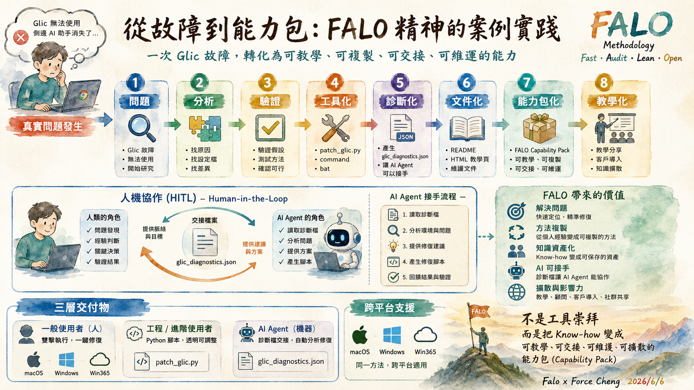

這不是一份單純的「Chrome 內建 Gemini 智慧側邊欄 修復指南」，而是 FALO 如何將一個日常技術障礙，透過範例學習與遷移學習，轉化為可教學、可複製、可交接且由 AI Agent 運行的「能力包（Capability Pack）」的資產化歷程。
本專案嚴格遵循 FALO 方法論，將一次性的問題排查，透過系統化的方式層層遞進，轉化為可重複利用的知識資產：

💡 點擊上方圖片可放大看原圖 | 💾 點此直接下載架構圖 PNG
Local State 全域設定檔與 Preferences 檔案，找出「地區一致性驗證」與「Gemini 智慧側邊欄 使用資格」的判定公式，形成第一版系統分析報告。patch_glic.py 以及 Mac/Windows 一鍵雙擊腳本，減少繁雜的人工作業並排除路徑依賴。gemini_chrome_diagnostics.json 結構化診斷標準，一旦腳本執行異常，即主動向本機環境的 AI Agent 交接，讓 AI Agent 具備代為執行的能力。現代化運維不應僅僅依賴人工，也不應迷信 100% 完美的自動化。本專案展示了從「複雜終端機指令」走向「AI 時代人機協同」的演進歷程：
python3 patch_glic.py 或執行權限指令。這對非技術背景的用戶具有極高的操作門檻。
.command) 與 Win (.bat) 雙擊啟動檔，為用戶提供極簡的單一執行入口。
當「便利性」與「作業系統安全機制」產生衝突時，傳統做法是強迫使用者去閱讀複雜的錯誤代碼、上網查指令手動排解。但在 AI 時代，我們推薦使用 AI Agent 協同降級（Fallback）機制：
python3 patch_glic.py，或者自動幫下載的啟動檔執行 xattr -d 移除隔離屬性。AI Agent 作為可信賴的代理執行者，完美繞過了作業系統對圖形介面雙擊的安全封鎖，解決了安全與便利的衝突。
本專案將複雜的排查動作，轉化為以下三隻互相解耦、可由 AI Agent 或人工調用的核心程式碼：
Local State 設定檔路徑。讀取 JSON 後，將地區鎖偽裝為美國 (us)，開啟 glic 的 eligibility 權限，並將所有 Profiles 的使用資格設為 True，最後安全寫回檔案。
python3 patch_glic.py。此檔案作為 Mac 用戶一鍵運行的包裝器。
python patch_glic.py。此檔案作為 Windows 用戶一鍵運行的包裝器。
💡 點擊上方心智圖可放大看原圖 | 💾 點此直接下載運作原理流程圖 JPG
patch_glic.command，系統跳出安全性警告（請點選「完成」或關閉警告）。patch_glic.command 即可順利執行修復。
patch_glic.bat 連點兩下。.command 與 .bat 主要是為了降低使用門檻的包裝外殼。
技術同仁或本機 AI Agent 可以直接在終端機中切換至檔案目錄並執行原生 Python 指令：python3 patch_glic.py (Mac) 或 python patch_glic.py (Windows)這是我們分析 `Local State` 設定檔後所沉澱的技術參數，作為內部團隊進行遷移學習與深入研究的知識資產（KM）：
Local State 全域設定： - variations_country (全域地區標記) - variations_permanent_consistency_country (版本永久地區鎖) - glic.is_glic_eligible (全域 Gemini 智慧側邊欄 資格) - glic.launcher_enabled (全域啟動器啟用狀態) - profile.info_cache.<profile>.is_glic_eligible (各 Profile 個別 Gemini 智慧側邊欄 資格) - browser.enabled_labs_experiments (已開啟的實驗旗標，包括 glic-actor@1 (Chrome Gemini 智慧側邊欄旗標) 等) 系統外部訊號： - macOS AppleLocale / AppleLanguages - Windows culture / home location - Chrome executable path & profile-directory
理解這些參數是為了對系統狀態進行 before / after 的比對與驗證，這就是 FALO 的 Audit（審計）與 Lean（精益）精神的體現。
本專案最初啟動於 2026/04/22，當時以 macOS 平台的 Local State 檔為研究基礎，撰寫了第一版「Chrome 內建 Gemini 智慧側邊欄 顯示判定研究報告」。
如果您需要查閱最初專案啟動時的分析邏輯、系統分層觀察參數及歷史操作流程，請點擊下方連結：
📖 查閱 2026/04/22 專案啟動歷史版本{kind=link}
{kind=link}